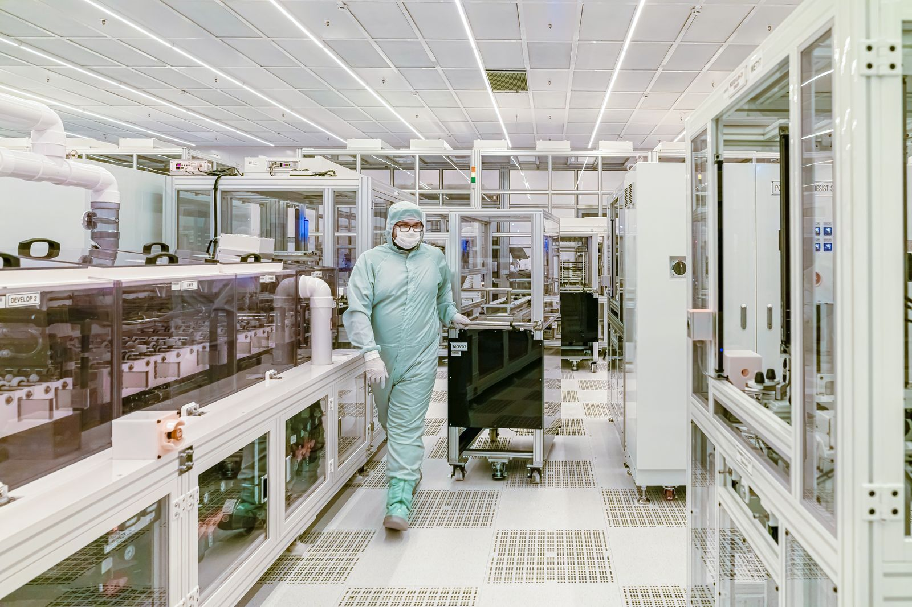
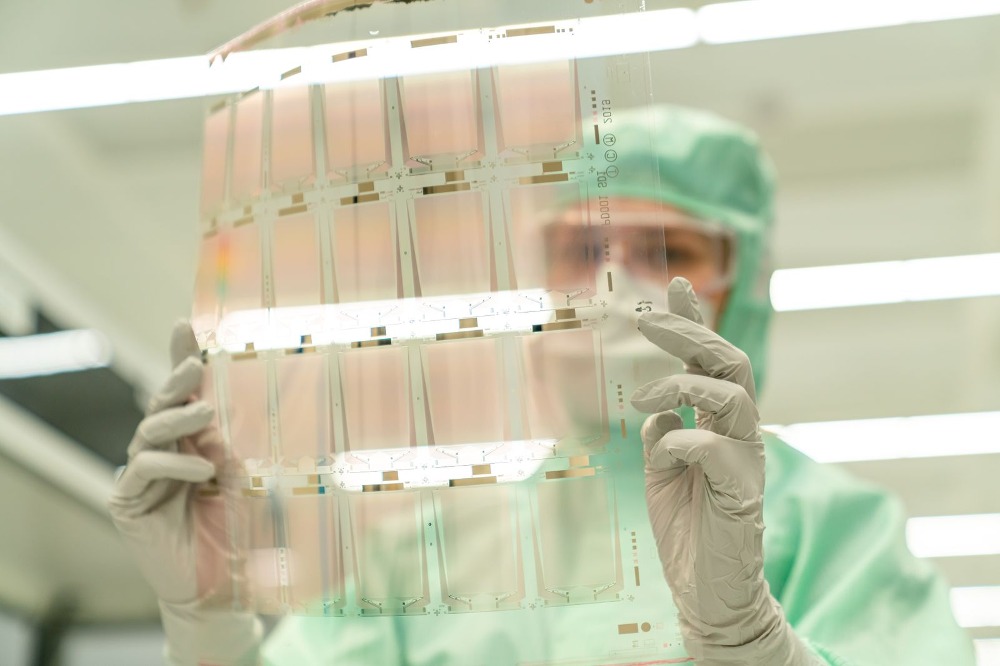

Growth-run log · Sheet 01 — the practice
Diamond moves heat. The number has conditions.
I am Dr Marta Kowalczyk. I grow CVD diamond — heat spreaders, optical windows and substrates — and I characterise every plate before it leaves the lab. The famous figure for diamond is 2,200 W/m·K. It is a real number: for one grade, at one thickness, measured one way. This site prints the grade, the thickness and the method next to every number it uses — including the numbers that make diamond look ordinary.
- Material
- Polycrystalline CVD, thermal grade
- Growth
- MPCVD · 2.45 GHz · ≈870 °C
- Carrier
- Mo disc, Ø 52 mm
- Target
- 6 plates · 0.50 mm · lapped
- Status
- Grown — laser-flash booked

growth runs logged since the practice opened in 2019
client substrates characterised — including other growers' material
runs regrown at the practice's cost under the regrow clause
thermal numbers published without grade, thickness and method
The instrument · Table T1 is the source
One table. One calculator. They cannot disagree.
Table T1 is the practice's printed basis for thermal design — the same table that goes into every report. The calculator below reads its conductivities from this table. Change the material, the thickness or the area and the working is printed line by line, the way it would appear on a run sheet.
| Material | k (W/m·K) | Basis — thickness & method |
|---|---|---|
| Single-crystal CVD — electronic grade | 2,100 | Plates ≥ 400 µm · laser-flash diffusivity · homoepitaxial (100) |
| Polycrystalline CVD — thermal grade | 1,500 | Free-standing film, 500 µm · laser-flash · growth face |
| Polycrystalline CVD — thin film | 700 | Film, 50 µm · laser-flash · fine columnar grains near the nucleation face |
| Copper OFHC (C10200) | 398 | Handbook value, annealed · the baseline every claim is measured against |
| 4H-SiC — single crystal | 370 | Laser-flash · through-plane |
| Silicon (100) | 148 | Handbook value · lightly doped |
Read the thin-film row twice. The same material, grown by the same reactor, measures 1,500 at 500 µm and 700 at 50 µm — young films are fine-grained and grain boundaries scatter heat. A supplier quoting one conductivity with no thickness attached is giving you marketing, not data.
Heat-spreader calculator — Rth = L / (k · A)
Material — Single-crystal CVD — electronic grade
Rth = 0.00238 K/W
And the honest footnote: this is the plate alone. The joint under it — solder, braze or interface material — commonly adds more resistance than the plate itself. A perfect spreader behind a poor joint is jewellery. Every report from this practice says so, next to the number.
Cost a run — printed rates
€450
An indication from printed rates, not a quote. Thickness and area move the price first — they are reactor time. Characterisation is charged whether the news is good or bad. That is the point of it.

Services register · What the reactor is booked for
Five lines. Fees in the open.
A reactor day is €1,450, gases and standard substrates included. Characterisation is €620 a batch. Polishing and lapping €240 a part. The report and data pack is €450 fixed. What moves a price: thickness and area first — they are reactor time — then the polishing spec on your drawing.
Heat spreaders
Polycrystalline CVD plates, lapped, metallisation-ready, supplied with their measured k — not the grade's brochure k.
Single-crystal plates
Electronic-grade (100) plates to 10 × 10 mm for quantum and photonics work, characterised plate by plate.
Optical windows
IR grades for the 8–12 µm and 3–5 µm bands, transmission measured on the delivered part, curve supplied.
Characterisation only
Raman, laser-flash conductivity and X-ray rocking curve on your material — whoever grew it. The report says what it says.
Detector substrates
Low-nitrogen plates for particle and X-ray detector programmes, grown to a written impurity budget.
“Marta talked us out of the expensive plate. Her characterisation of our actual stack showed the thermal grade met the budget with margin — she sold us the cheaper run and printed the working. The junction temperatures landed where her sheet said they would.”
Sheet 04 — enquire
Have a plate to grow, or a number to check?
Bring the drawing, the thermal budget and the number you have been quoted — by anyone, including us. If the honest answer is a cheaper material, that is the answer you will get in writing.